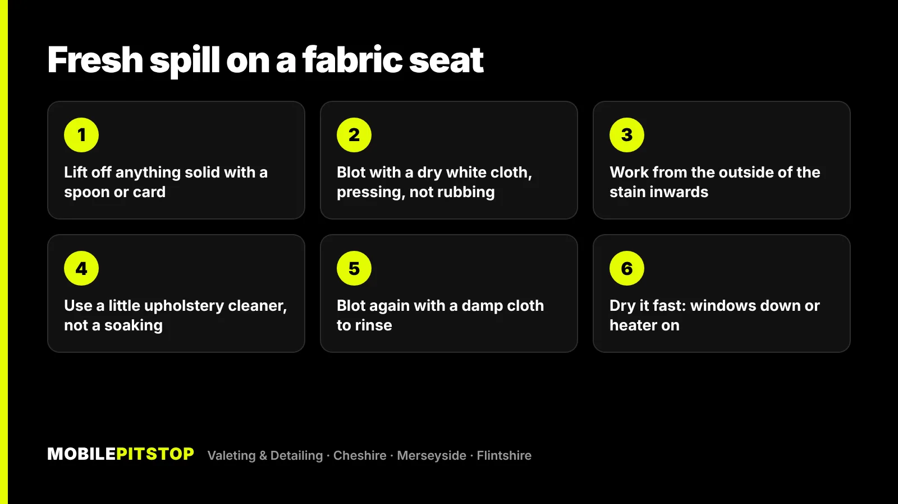
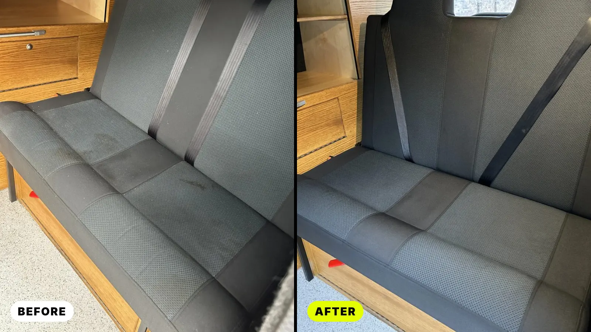
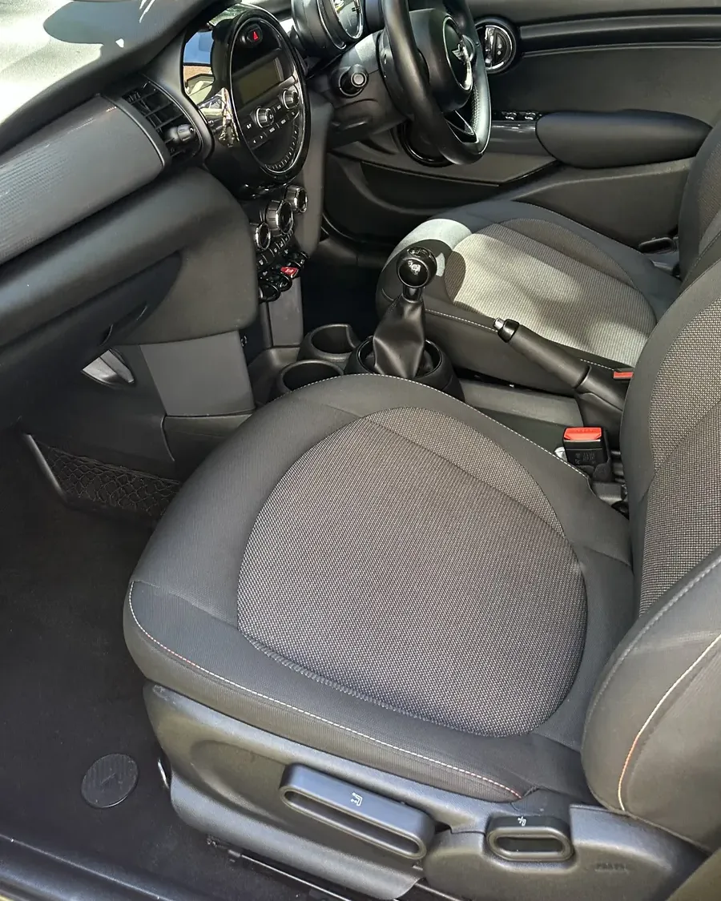

To get a stain out of a fabric car seat, blot it, don't scrub it, and use as little liquid as you can. Lift off anything solid, press a clean white cloth onto the stain to soak up what's still wet, then work a small amount of upholstery cleaner in from the edges towards the middle and blot again.
Most stains that go wrong do so because of the first five minutes: rubbing pushes the stain deeper and wider, and soaking the seat drives it into the foam underneath. Get those two things right and a fresh spill usually comes out.
Older stains, big spills and anything that has started to smell are a different job. Below is what works at home, what to avoid, which stains need what, and what shampoo and extraction actually does when DIY runs out.
A fabric seat is woven cloth over thick foam. When you rub a wet stain, you do three things at once: you push the liquid down into the foam, you spread it sideways through the weave, and you rough up the fibres so the patch looks fuzzy even once it's clean.
Blotting does the opposite. Pressing a dry cloth onto the stain draws the liquid up and out of the fabric. It's slower, but every press takes some of the stain away instead of moving it somewhere else.
Use a white or plain cloth. A coloured one can transfer its own dye onto a light seat once it gets wet.

Avoid bleach, washing-up liquid in quantity and strong household cleaners. They can lighten the fabric, leave a sticky residue that attracts dirt, or foam up so much that you end up over-wetting the seat to rinse it out. Never mix cleaning products.
If you've ever cleaned a small spot and ended up with a pale ring around it, that's a water mark, sometimes called a tide mark. When you wet one patch of fabric, the water wicks outwards and carries dirt from the seat and the foam with it. As it dries, the dirt is left behind at the edge of the wet area.
Two things help. Use less water in the first place, and if a ring appears, clean the whole panel out to its seams with a lightly damp cloth so it dries evenly. On an older, grubby seat, one clean patch can stand out as much as the stain did, which is often the point where it's worth having all the seats done together.
| Stain | First move | Watch out for |
|---|---|---|
| Coffee, tea and fizzy drinks | Blot straight away, then a little upholstery cleaner | Sugary drinks leave a sticky patch that collects dirt, so rinse well |
| Milk and baby milk | Blot, then cool water, not hot | Milk that has soaked into the foam smells sour days later |
| Mud | Let it dry, then brush and vacuum it out | Wiping wet mud smears it deeper into the weave |
| Chocolate, food and grease | Scrape off what you can, then a cleaner that handles grease | Too much rubbing leaves a fuzzy, flattened patch |
| Sick and other bodily spills | Remove what you can, blot, keep the windows open | Usually needs extraction and odour treatment to stop the smell |
| Pen ink and dye from jeans | Test carefully on a hidden area first | Dye can bond with the fibres and may not fully come out |
Milk deserves a special mention. If a lot of it has gone in, the top of the seat can look clean while what's soaked into the foam goes off underneath. That's a job for extraction, and if the smell has already started, see our odour removal service.
Spot cleaning works on fresh, small spills that haven't gone far into the seat. It struggles with:
Pouring more cleaner and water on at this point usually makes things worse. The foam gets wetter, takes longer to dry, and in the damp months on the Wirral and across Cheshire, a seat that doesn't dry properly can end up smelling like the cars in our damp and musty smell guide.

The difference between a spot clean and a proper seat clean is extraction. Instead of leaving dirty water in the fabric, an extractor flushes the fibres and pulls the water, cleaner and dirt straight back out. On our jobs it goes like this:
Steam, shampoo and extraction of the seats, carpets, mats and boot, with seat stain treatment, are included in our In & Out Deep Clean rather than sold as extras. If the outside is fine and it's the cabin that needs attention, the Interior Deep Clean covers the compressed air, deep vacuum, steam and hand agitation inside. There's more on the seat side of things on our seat shampooing page.

Shampoo and extraction remove most stains, but not all of them. Ink and dye can bond with the fibres. Bleach and sun fading are a loss of colour, not dirt, so there's nothing to wash out. Burns, tears, bobbling and worn bolsters are damage rather than stains, and they need a trimmer, not a valeter.
If you're not sure which group a mark falls into, send us a few photos in daylight and we'll tell you straight what we think will come out and which service the car needs, including when a cheaper one will do. If the seats are covered in pet hair as well, our dog hair guide covers what works for that.